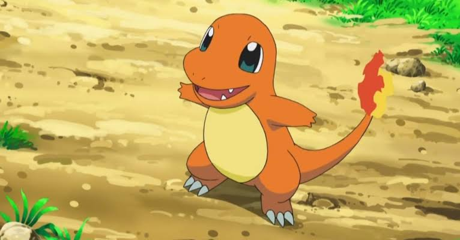
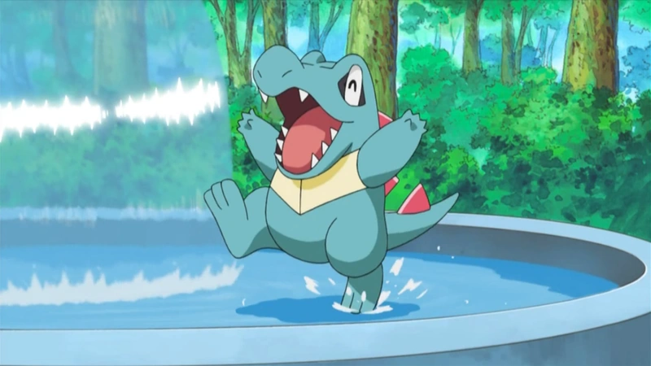
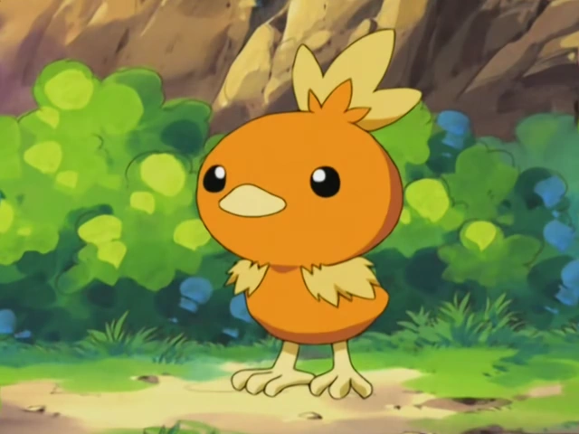

1º Geração
A primeira geração de Pokémon, representada por Pokémon Red, Pokémon Blue e Pokémon Yellow, surgiu no Game Boy e estabeleceu praticamente toda a base da franquia. Os jogos eram divididos principalmente entre Red e Blue, cada um com Pokémon exclusivos que incentivavam a troca entre jogadores, enquanto Yellow funcionava como uma versão especial inspirada no anime.
O jogador inicia sua jornada escolhendo entre Bulbasaur, Charmander ou Squirtle e explora a região de Kanto, um mapa relativamente linear com cidades conectadas por rotas. Essa região foi diretamente inspirada na região real de Kanto. O conflito central envolve a Team Rocket, uma organização criminosa que rouba e explora Pokémon para lucro, liderada por Giovanni. A narrativa é simples, focada na jornada do jogador para se tornar campeão enquanto enfrenta essa ameaça.
Essa geração de Pokémon nasceu da ideia de criar um jogo que transmitisse às novas gerações a experiência de explorar a natureza e colecionar pequenos animais, algo que seu criador, Satoshi Tajiri, vivenciou durante a infância. Tajiri cresceu na região de Machida, onde passava horas explorando campos, rios e florestas em busca de insetos. Ele colecionava besouros, observava seus comportamentos e até promovia pequenas disputas entre eles com os amigos. Com a urbanização da região, esses ambientes naturais desapareceram, e Tajiri quis recriar esse sentimento de descoberta por meio de um videogame.

2º Geração
Na segunda geração, com Pokémon Gold, Pokémon Silver e Pokémon Crystal, a franquia evoluiu tecnicamente ao utilizar o Game Boy Color, trazendo cores, melhorias visuais e novas mecânicas. A divisão entre versões continuou com Pokémon exclusivos, enquanto Crystal refinou a experiência com animações e pequenos avanços narrativos.
O jogador escolhe entre Chikorita, Cyndaquil ou Totodile e explora a região de Johto, que apresenta um design mais tradicional e culturalmente influenciado. Johto foi inspirada na região japonesa de Kansai, conhecida por suas cidades históricas. Os protagonistas da segunda geração de Pokémon iniciam sua jornada na pacata New Bark Town, localizada na região de Johto. O herói masculino é Ethan, facilmente reconhecido por seu boné virado para trás e jaqueta vermelha, que serve como o personagem principal padrão desde o lançamento das versões Gold e Silver.
A introdução de uma heroína jogável aconteceu um pouco depois, com a chegada de Kris na versão Crystal, marcando um momento histórico por ser a primeira vez que os jogadores puderam escolher o gênero do personagem na franquia. Anos mais tarde, com o lançamento dos remakes HeartGold e SoulSilver para o Nintendo DS, a contraparte feminina foi reimaginada e substituída por Lyra, que ganhou um visual totalmente novo com chapéu de palha e macacão azul, mantendo a mesma essência de exploração e descoberta de seus antecessores.

3º Geração
Já a terceira geração, composta por Pokémon Ruby, Pokémon Sapphire e Pokémon Emerald, marcou um salto técnico significativo ao chegar ao Game Boy Advance. A divisão de versões passou a influenciar diretamente a narrativa: Ruby e Sapphire apresentam conflitos distintos, enquanto Emerald unifica e expande ambos.
O jogador começa com Treecko, Torchic ou Mudkip e explora a região de Hoenn, que possui um mapa mais aberto, com grande presença de rotas marítimas e exploração aquática. Hoenn foi inspirada na ilha japonesa de Kyushu.
O conflito central se torna mais ideológico e complexo, envolvendo duas organizações rivais: a Team Magma, que deseja expandir os continentes, e a Team Aqua, que quer ampliar os oceanos. Esse embate é intensificado pelo uso de Pokémon lendários que controlam forças naturais, trazendo uma escala maior para a narrativa em comparação às gerações anteriores.
Na história, a aventura começa de uma forma inédita para a época, quebrando a tradição das gerações anteriores onde o herói já era um morador antigo de sua cidade natal. Em Hoenn, o protagonista vivencia a descoberta de um novo lar, sendo introduzido literalmente dentro de um caminhão de mudança que chega à pacata Cidade de Littleroot, vindo da região de Johto.
Logo após desembarcar e ajustar o relógio em seu novo quarto, o jogador se depara com outra grande novidade narrativa da terceira geração: a presença ativa de um pai na história. O pai do protagonista é Norman, o poderoso e respeitado Líder de Ginásio da cidade de Petalburg, marcando a única vez na linha principal de jogos em que a figura paterna do herói é desenvolvida e integrada diretamente à trama.
